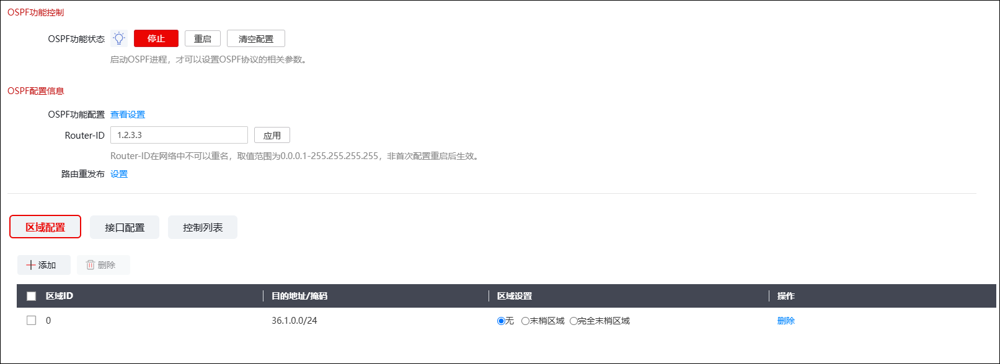
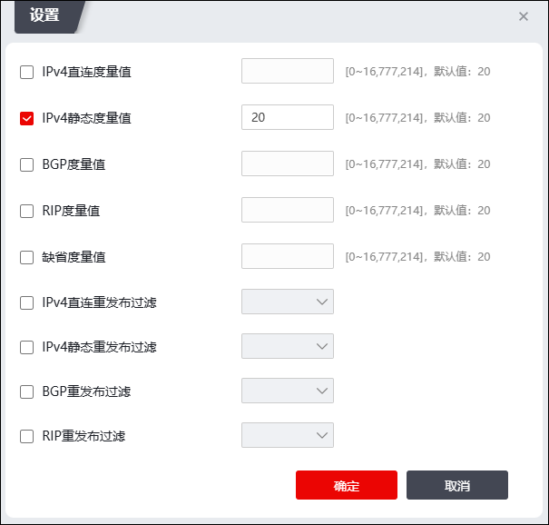
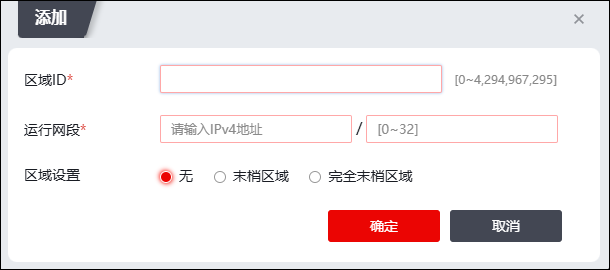
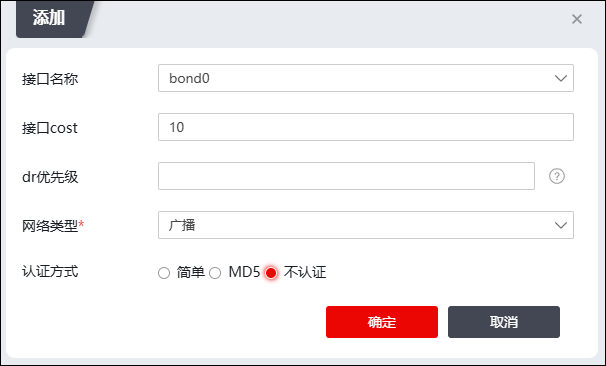
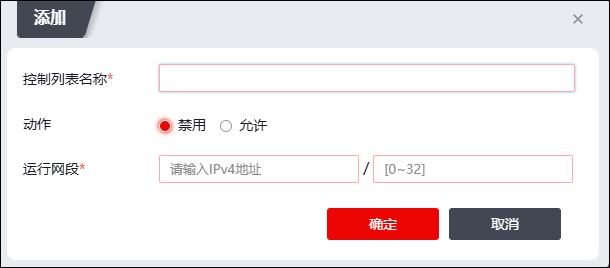

OSPF（Open Shortest Path First）协议是一个基于链路状态的动态路由协议。在一个OSPF网络中，每一台路由器首先与自己的邻居建立邻接关系，然后向形成邻接关系的邻居发送链路状态通告（LSA）。LSA包含了所有的链路信息，每一个路由器收到LSA都会把这些通告记录在链路数据库中，并发送一个副本LSA给它的邻居。通过整个区域内的LSA泛洪，所有的路由器都会形成相同的链路状态数据库；当所有路由器链路状态数据库相同时，每个路由器会以自己为根，通过SPF算法计算出一个无环的拓扑，从而计算出自己到达系统内部可达的最佳路由。OSPF路由协议会把大规模的网络划分为多个小范围区域，以避免大规模网络带来的复杂的OSPF计算弊端，从而提高网络性能。
| 步骤1 | 选择 。激活“OSPF”标签页,如下图所示。 |

1）点击【启动】按钮即可启动OSPF进程。启动了OSPF进程后，才可以设置OSPF协议的相关参数。
2）点击【停止】按钮即可停止OSPF进程运行。
3）点击【重启】按钮，重新启动OSPF进程。当网络在当前运行的OSPF协议下出现某些不良状况，重启OSPF进程可以达到改善网络运行状况的目的；重启OSPF进程不会改变OSPF协议的参数配置。
4）点击【查看设置】按钮，弹出“查看”界面，可以查看OSPF路由协议的配置、接口、邻居和路由信息。
5）点击【清空配置】按钮，可以清空当前OSPF配置信息；进程开启或关闭时都可以进行配置信息的清空。
| 步骤2 | 设置路由ID。 |
在“Router-ID”文本框中输入标识路由器身份的route-id，再点击【应用】按钮使设置生效。该项为必配项，因为route-id用于在OSPF协议中标识路由器，必须由管理员手动指定；route-id在网络中不可以重名，取值范围为0.0.0.1-255.255.255.255。
| 步骤3 | 路由重发布。 |
1）点击【设置】按钮，进入重发布信息设置页面，如下图所示。

在设置OSPF路由重发布时，各项参数的具体说明如下表所示。
参数 |
说明 |
|---|---|
IPv4直连度量值 |
表示允许将直连路由信息引入到OSPF路由中作为外部路由信息，并可在其后的文本框中设置路由引入后的metric值。取值范围：0-16777214。 |
IPv4静态度量值 |
表示允许将静态的路由信息引入到OSPF路由中，并可在其后的文本框中设置路由引入后的metric值。取值范围：0-16777214。 |
BGP度量值 |
表示允许将BGP的路由信息引入到OSPF路由中，并可在其后的文本框中设置路由引入后的metric值。取值范围：0-16777214。 |
RIP度量值 |
表示允许将RIP的路由信息引入到OSPF路由中，并可在其后的文本框中设置路由引入后的metric值。取值范围：0-16777214。 |
缺省度量值 |
表示允许将其他未提及种类的路由信息引入到OSPF路由中，并可在其后的文本框中设置缺省路由引入后的metric值。取值范围：0-16777214。 |
IPv4直连/IPv4静态/BGP/RIP重发布过滤 |
设置哪些路由不会被重发布到OSPF协议。 |
2）勾选要重发布的路由类型，并设置度量值，表示将对路由表中的该类路由进行重发布，邻居引入该路由后将标记此处设置的数值。
3）点击【确定】按钮完成OSPF路由重发布度量值的设置，点击【取消】按钮撤销本次操作。
| 步骤4 | 设置区域。 |
1）在“区域配置”页签处点击『添加』，进入“添加”界面，如下图所示。

在设置区域时，各项参数的具体说明如下表所示。
参数 |
说明 |
|---|---|
区域ID |
必选项，设置区域的ID号。取值范围：0-4294967295。 说明： 1）路由器和路由器之间必须配置相同的OSPF区域，否则无法形成邻居。 2）OSPF区域是基于路由器的接口划分的，而不是基于整台路由器划分。一台路由器可以属于单个区域，也可以属于多个区域。 |
运行网段 |
必选项，输入运行OSPF协议的网段IP地址和掩码。 |
区域设置 |
设置区域类型，可选项：无、末梢区域、完全末梢区域。 末梢区域：主要用于优化网络性能和减少路由表的大小。如企业的分支网络主要需求是访问总部网络和互联网，对外部网络的详细路由信息需求较少，则可将分支网络所在区域设置为末梢区域。 完全末梢区域：是末梢区域的一种扩展类型，旨在进一步减少区域内路由器需要处理的路由信息，从而优化网络性能和资源利用率。如物联网网络中，可将大量物联网设备联网区域设置为完全末梢区域。 |
2）点击【确定】按钮完成区域的设置。
| 步骤5 | 设置接口。 |
1）在“接口配置”页签处点击『添加』，进入“添加”界面，如下图所示。

在设置接口时，各项参数的具体说明如下表所示。
参数 |
说明 |
|---|---|
接口名称 |
指定配置哪个接口的OSPF认证参数的属性。 |
接口cost |
设置接口cost值，取值范围：1-65535。 |
dr优先级 |
设置该路由器成为DR的优先程度，数值越大，路由器成为DR的优先级越高。取值范围：0-255。 |
网络类型 |
在下拉框中选择网络类型，可选项：广播、点对点。 |
认证方式 |
设置通过该接口进行链路状态通告（LSA）互换时验证的方式。可选项：简单、MD5、不认证。 设置为“简单”时，NGFW使用基于文本的密码方式验证LSA。 设置为“MD5”时，NGFW使用MD5认证方式验证LSA。 说明： 1）路由器之间必须配置相同的身份认证方式，否则无法形成邻居。 2）认证方式为“简单”时，需配置接口采用明文认证时使用的口令；认证方式为“MD5”时，需配置接口采用MD5认证时的MD5认证口令和KEY ID。 |
2）点击【确定】按钮完成接口的设置。
| 步骤6 | 设置控制列表。 |
1）在“接口配置”页签处点击『添加』，进入“添加”界面，如下图所示。

在设置控制列表时，各项参数的具体说明如下表所示。
参数 |
说明 |
|---|---|
控制列表名称 |
设置控制列表名称。 |
动作 |
设置允许/禁止引入的路由。可选项：禁用、允许。 |
运行网段 |
设置网段地址。 |
2）点击【确定】按钮完成访问控制列表的配置。